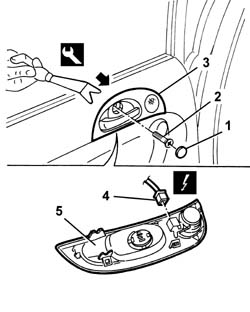

7010C44 interior handle panel - r r
- Path
- Procedures > 70 FITTINGS > 7010 PASSENGER COMPARTMENT REAR SIDE DOORS > 7010C rear lock controls > 7010C44 interior handle panel - r r
- Kind
- repair procedure (removal / refitting; the operation number is the code)
- Applies to
- all engines; all production periods
- Interactive page
- https://sloeber94.github.io/elrnDB-a147/en/#/3025704
Applies to: all engines; all production periods
 Removing
Removing
 Refitting
Refitting1. Remove the bolt cover.
2. Unscrew the bolt.
3. Gently remove the trim, disconnecteing it from the internal retainers using the special tool.
 | Name | Country |
|---|---|---|
1 | Scraper blade | 1.823.015.000 |
4. Disconnect the electrical connections.
 | Name | Connector |
|---|---|---|
4 | Rear left tweeter speaker |
| Name | Connector |
|---|---|---|
4 | Rear right tweeter speaker |
5. Recover the trim.
If necessary, 5570T94 rear tweeter (one), lh or rh - r r

Applies to: all engines; all production periods
Refitting
RemovingCheck that the trim is not damaged.
If removed, 5570T94 rear tweeter (one), lh or rh - r r
Connect the electrical connection
Position the trim and engage the inner retainers.
Tighten the bolt and fit the bolt cover.
Topics linked from this page (3)
- 5570T94 rear tweeter (one), lh or rh - r r
- P47 Rear left tweeter speaker
- P48 Rear right tweeter speaker
Topics that link to this page (17)
- 5505B21 rear door wiring - r r
- 5570T94 rear tweeter (one), lh or rh - r r
- 5570T96 rear side speaker - r r
- 5580T20 bose sound system rear speaker (one), lh or rh - r r
- 7010A05 rear side door water guard protection-r r or arrange
- 7010A28 rear side door opening limiter-r r
- 7010C51 rear side door inner catch return device - r+r for repair or replacement
- 7010C55 rear side door interior opening return device (with handle) - r+r for repair or replacement
- 7010C65 handle link to lock - r r
- 7010D12 fixed window glass element - r r
- 7010D15 rear side door descending window glass-r r
- 7010D23 rear side door descending window glass guide one-r r
- 7010D33 channel of door descending glass inner guide (one) lh or rh, of rear side door - r r
- 7010E10 rear side door inner panel - r r or replace
- 7010M21 rear side door electrically-operated window-r r
- 7010N21 rear side door lock motor-lock assembly r r
- 7205E38 Stripping REAR SIDE DOOR